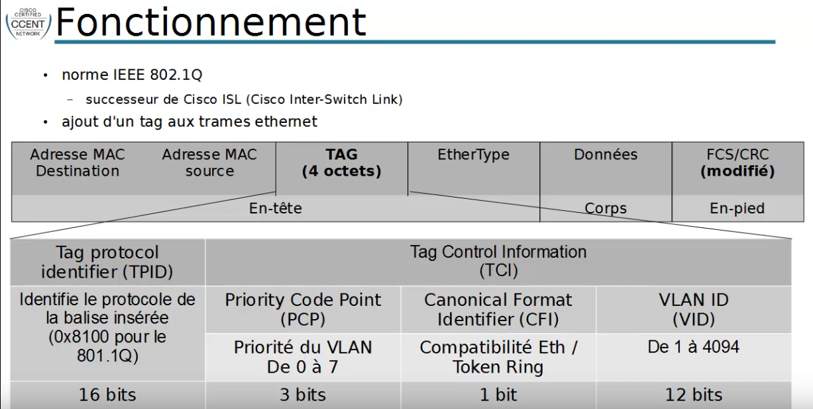

switching : Introduction aux VLANs
Plan
• Présentaion
• Intérêts
• Fonctionnement
Présentation
• Virtual LAN
◇ réseau local virtual
• réseau logique indépendant
• permet de séparer les ports d'un switch dans des réseau différents
◇ les machines d'un VLAN ne pouvant communuiquer avec celles d'un autre VLAN
Intérêts
• du concept de VLAN lui même
◇ segmetation
◇ sécurité
◇ optimisation de la bande passante
◇ sécurité
▪ nécessite l'utilisation d'un routeur pour communiquer entre VLANs
• de l'usage de VLAN plutôt que de nombreux switchs séparés
◇ diminution des coûts
▪ un “gros" switch de 256 ports revient moins cher que 5 switch de 48
◇ centralisation de la configuration
◇ modifications simplifiées
▪ le passage d'une machine d'une VLAN à une autre peu se faire par simple configuration
Fonctionnement
• norme IEEE 802.1Q
◇ successeur de Cisco ISL (Cisco Inter-Switch Link)
• ajout d'un tag aux trames ehternent

Ce qu'on a couvert
• Introduction au concept de VLANs
◇ présentation
◇ avantages
◇ fonctionnement
▪ protocole 802.1Q